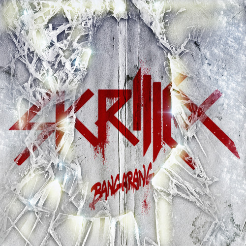

Mi Banda Favorita
Skrillex
Sonny John Moore (15 de enero de 1988, Los Ángeles, California) más conocido por su nombre artístico Skrillex, es un productor estadounidense de música electrónica de los géneros dubstep, brostep y electro house, además de haber sido vocalista de la banda de post-hardcore From First to Last, entre los años 2004 y 2007.
Mi discografia favorita de Skrillex es Bangarang

- Right in
- Bangarang
- Break a Sweat
- The Devils Den
- Kyoto
- Summit
- Rigth on time
Escuchar Skrillex